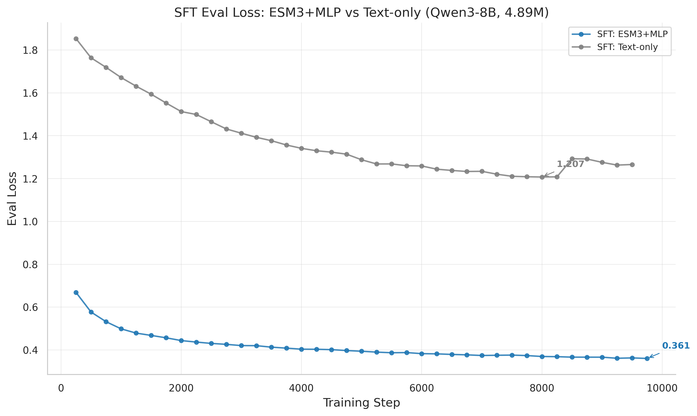
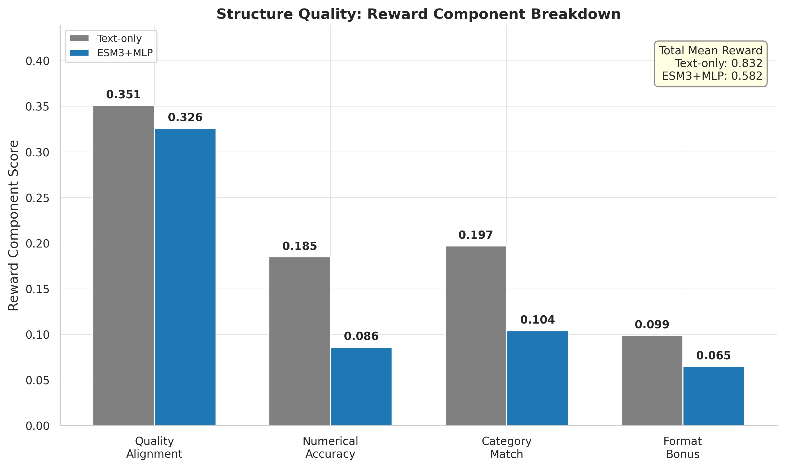
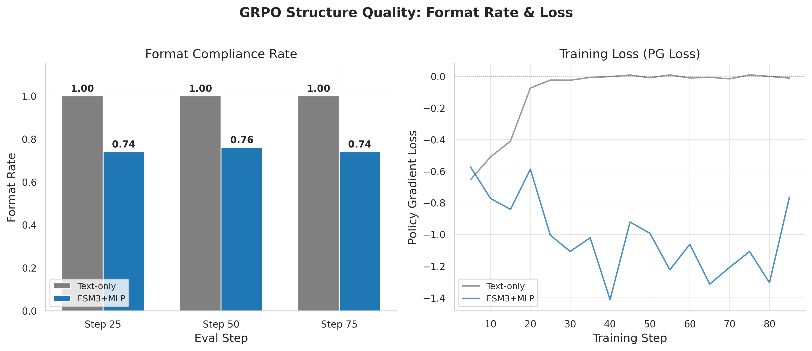

After 25 experiments spanning SFT and GRPO phases on Qwen3-8B, the ESM3+MLP approach achieves eval_loss 0.361 on SFT (70.1% better than text-only at 1.207). GRPO on the structure quality task shows the strongest learning signal: text-only GRPO reaches mean_reward 0.832 while MLP plateaus at 0.582, revealing a critical gradient routing problem where MLP's multimodal and LoRA pathways cannot both update simultaneously. Frozen-MM experiments partially resolve this, reaching 0.774 reward with LoRA-only updates. Classification-based reward reformulation is under active investigation.
All SFT experiments use Qwen3-8B-Instruct-2507 with LoRA (r=8, all linear layers), trained on the combined 4.89M sample dataset. Loss metric: token_avg_loss for training, eval_loss for validation.
| Parameter | ESM3+MLP | Text-Only | Perceiver |
|---|---|---|---|
| Experiment | sft_esm3_mlp_combined_qwen3_8b_it_0306 |
sft_text_combined_qwen3_8b_it_0307 |
sft_esm3_perceiver_combined_qwen3_8b_it_0308 |
| Approach | esm3 (MLP projector) | text (raw AA tokens) | esm3 (Perceiver) |
| Learning Rate | 2e-4 (LR) / 1e-3 (projector) | 2e-4 | 2e-4 / 1e-3 (projector) |
| Max Tokens/Batch | 8192 | 8192 | 8192 |
| Total Steps | 9750 | 9647 | Failed (empty logs) |
| Status | Completed | Completed | Failed to start |
| Metric | ESM3+MLP | Text-Only | MLP Advantage |
|---|---|---|---|
| Best eval_loss | 0.3607 (step 9750) | 1.2072 (step 8000) | 70.1% lower |
| Last eval_loss | 0.3607 (step 9750) | 1.2656 (step 9500) | 71.5% lower |
| Final token_avg_loss | 0.4378 | 1.6432 | 73.4% lower |
| Convergence | Fully converged (range 0.006) | Slight overfitting after step 8000 | -- |
| Grad norm (mean) | 0.627 | 2.365 | 3.8x lower |

All GRPO experiments chain from one of two SFT parents: MLP (checkpoint-9750) or Text (checkpoint-9647). The structure quality task uses ESMFold-based rewards; ProteinLM bench uses a benchmark-specific reward.
| Metric | v1 (3 epochs) | v2 (10 epochs) |
|---|---|---|
| Experiment | grpo_proteinlm_..._0310 |
grpo_proteinlm_..._0311 |
| Steps | 39 | 130 |
| Mean reward (final) | 0.695 | 0.676 |
| Reward trend | Flat/noisy | Flat/noisy |
| Zero-std fraction | 37.2% | 42.3% |
| Grad LoRA | 0.805 | 0.826 |
| Grad multimodal | 0.0 | 0.0 |
This is the most extensively explored GRPO task, with 11 experiments testing different configurations.
| Experiment | Approach | Config | Final Reward | Key Finding |
|---|---|---|---|---|
..._text_sft_0311_142908 |
Text | Standard | 0.753 | LoRA grad=0.493, format=100% |
..._text_sft_0312_032738 |
Text | Extended | 0.832 | Best overall reward |
..._text_classify_0313 |
Text | Classification | 0.710 | 58.2% zero-std (too easy?) |
..._mlp_sft_0311_114205 |
MLP | Standard (10ep) | 0.834 | LoRA grad~0, MM grad=1.0 |
..._mlp_sft_0312_011859 |
MLP | Extended | 0.582 | LoRA grad=0, MM grad=0.247 |
..._frozen_mm_0312 |
MLP | Frozen MM | 0.774 | LoRA grad=0.071, fixed routing |
..._frozen_mm_focal_0312 |
MLP | Frozen MM + focal | 0.725 | LoRA grad=0.119 |
..._classify_0312 |
MLP | Classification | 0.598 | 17.7% zero-std |


| Metric | Text | MLP (standard) | MLP (frozen MM) |
|---|---|---|---|
| Format bonus (max 0.1) | 0.099 | 0.065 | 0.095 |
| Quality alignment | 0.351 | 0.326 | 0.347 |
| Numerical accuracy | 0.185 | 0.086 | 0.169 |
| Category match | 0.197 | 0.104 | 0.164 |
| Predicted pLDDT | 79.1 | 67.9 | 85.1 |
| Actual pLDDT | 79.7 | 79.7 | 79.7 |


| Phase | Best Config | Key Metric | Value | Status |
|---|---|---|---|---|
| SFT | ESM3+MLP | eval_loss | 0.361 | Converged, production-ready |
| SFT | Text-only | eval_loss | 1.207 | Converged, slight overfitting |
| GRPO Structure | Text-only (extended) | mean_reward | 0.832 | Best GRPO result |
| GRPO Structure | MLP (frozen MM) | mean_reward | 0.774 | Best MLP GRPO result |
| GRPO ProteinLM | MLP (v1) | mean_reward | 0.695 | No improvement, discontinued |